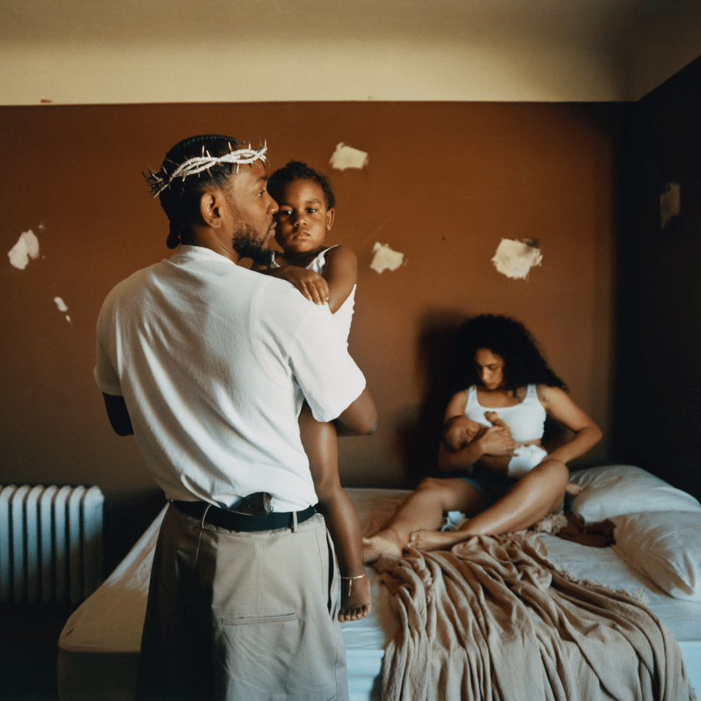

United In Grief pertenece al album Mr. Morale & The Big Steppers
Fue lanzada el 13 de mayo de 2022

United In Grief pertenece al album Mr. Morale & The Big Steppers
Fue lanzada el 13 de mayo de 2022
"United in Grief" de Kendrick Lamar es una canción sobre la pena y el dolor que experimentan personas de
todo el mundo en diversas formas y contextos. A través de sus anécdotas y observaciones personales, Kendrick
pinta un cuadro vívido de la oscuridad, el dolor y la pérdida que experimentan muchas personas en todo el mundo.
Habla de estar afligido por la pérdida de sus amigos, el sufrimiento de su familia, la destructividad del mal y
las luchas personales para tratar de sobrellevarlo todo. También destaca la desconexión emocional a veces, ofreciendo
referencias al materialismo, la vanidad y la arrogancia, así como el sentimiento de que no se puede encontrar una
solución real. La canción finalmente argumenta que a pesar del dolor que acompaña a tal tragedia, todos están unidos
en su dolor y que juntos pueden sanar y seguir adelante.